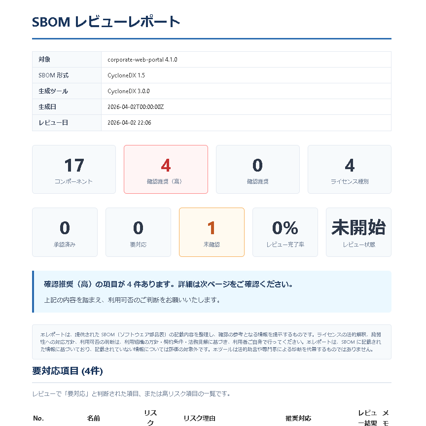
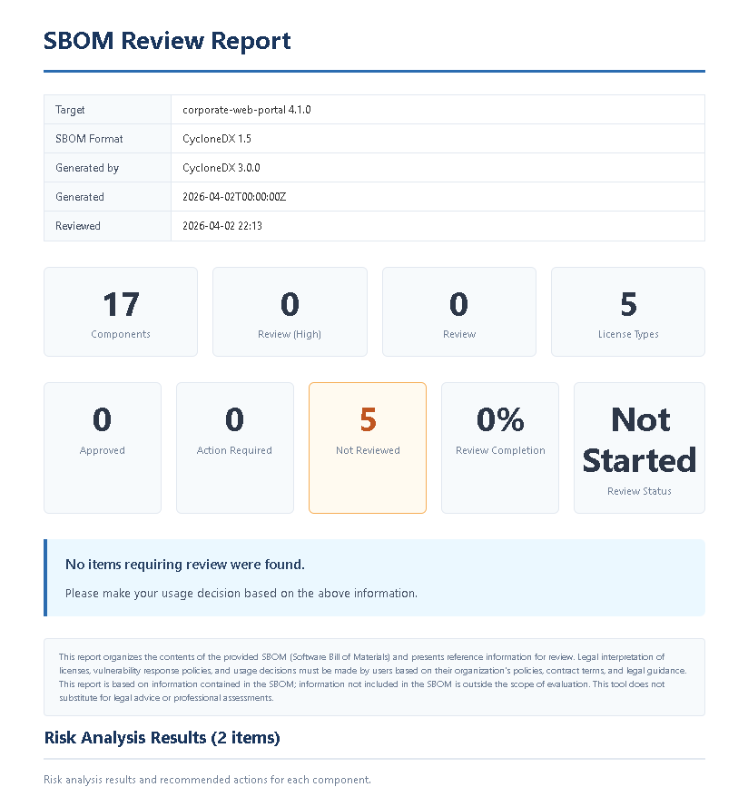

Chapter 12: Pro 機能ガイド
Pro ライセンスで利用できる高度な機能（v2.0）
Pro でできること
| 機能 | 説明 |
|---|---|
| レビュー | Free 版でも無制限にレビューできます。Pro では承認ワークフロー・完全版レポートと組み合わせて業務を完結できます。 |
| 承認ワークフロー | レビュー結果に対する承認・差し戻しワークフロー（PendingApproval / Returned）が利用できます。 |
| 完全レポート | 透かし（ウォーターマーク）なしの完全な HTML レポートを出力します。Free 版はウォーターマーク付きです。 |
| SBOM 差分（Diff） | 2 つの SBOM を比較し、依存関係・脆弱性・ライセンスの変化を検出します。 |
| オンライン補完 | PyPI / npm / NuGet のライセンス情報をオンラインで取得し、Unknown を大幅に削減します。 |
| 複数プロジェクト管理 | 複数のプロジェクトを切り替えて管理できます。 |
| OSV API オンライン脆弱性照合 | Google OSV データベースにリアルタイムで問い合わせ、最新の脆弱性情報を取得します。 |
| Delta Scan（差分スキャン） | 前回分析結果と比較し、依存・脆弱性・ライセンス・ポリシーの変化を検出します。 |
| 例外管理 | 脆弱性・ライセンス問題の例外承認・期限管理を行います。 |
| AI プロンプト生成 | ChatGPT 等の AI に貼り付けて使える修正支援プロンプトを生成します。 |



無制限レビュー Pro
レビュー自体は Free 版でも無制限に行えます。Pro では承認ワークフロー・完全版レポート・複数プロジェクト管理と組み合わせて、レビュー業務全体を完結させることができます。
承認ワークフロー Pro
Pro ライセンスで利用できる承認ワークフローにより、レビュー結果を正式に承認する運用が可能になります。
| ステータス | 説明 |
|---|---|
| NotStarted | レビュー未開始 |
| InReview | レビュー実施中 |
| Completed | レビュー完了 |
| PendingApproval | 承認者による承認待ち（Pro） |
| Returned | 承認者から差し戻し（Pro） |
レビュー完了後、「承認申請」をクリックすると PendingApproval 状態に遷移します。承認者は内容を確認し、承認または差し戻しを行います。
完全レポート Pro
Free 版の HTML レポートにはウォーターマーク（透かし）が表示されます。Pro 版ではウォーターマークが除去され、以下の詳細セクションも含まれます。
- Executive Summary（レビュー統計付き）
- Action Required セクション
- リスク分析セクション（RiskReason / RecommendedAction / Evidence）
- AI セクション
- 免責事項（Disclaimer）
SBOM 差分（Diff） Pro
2 つの SBOM ファイルを比較し、追加・削除・変更されたパッケージ、新規・解消された脆弱性、ライセンスの変化を検出します。Delta Scan と組み合わせることで、継続的なレビューを効率化できます。
オンライン補完 Pro
設定画面で「オンライン補完」を有効にすると、以下のパッケージレジストリからライセンス情報を自動取得します。
| レジストリ | 対象 |
|---|---|
| PyPI | Python パッケージのライセンス情報 |
| npm | Node.js パッケージのライセンス情報 |
| NuGet | .NET パッケージのライセンス情報 |
- Unknown と判定されるパッケージが大幅に減少します。
- SPDX ID に正規化して分類するため、正確なリスク判定が行われます。
- インターネット接続が必要です。オフライン環境ではローカル DB のみ使用されます。
複数プロジェクト管理 Pro
Pro ライセンスでは、複数のプロジェクトを登録し、プロジェクト間を切り替えてレビュー・レポートを管理できます。Free 版は 1 プロジェクトのみです。

OSV API オンライン脆弱性照合 Pro
設定画面で「オンライン脆弱性照合」を有効にすると、ローカル JSON データベースだけでなく OSV API にもリアルタイムで問い合わせます。
- ローカル DB は定期更新ですが、OSV API は常に最新のデータを返します。
- ローカル DB に含まれない新しい脆弱性も検出可能です。
- インターネット接続が必要です。オフライン環境ではローカル DB のみ使用されます。
Delta Scan（差分スキャン） Pro
Delta Scan は、前回の分析結果と今回の結果を比較して 変化点 を自動検出する機能です。AI Governance の差分も検出されます。詳しくは 差分スキャン をご覧ください。
例外管理 Pro
脆弱性やライセンス問題に対して「例外として承認済み」の記録を管理します。詳しくは 例外管理 をご覧ください。

AI プロンプト生成 Pro
分析結果をもとに、ChatGPT 等の AI チャットに貼り付けて使える 修正支援プロンプト を生成します。
- VulnerabilityRemediation — 脆弱性修正の相談プロンプト
- LicenseReview — ライセンスリスクの相談プロンプト
- DeltaScanReview — 差分結果のリスク評価プロンプト
AI プロンプトはクリップボードにコピーできます。お使いの AI チャットサービスに貼り付けてご利用ください。
Pro の購入方法については ライセンスと購入 をご覧ください。
Chapter 12: Pro Features Guide
Advanced features available with the Pro license (v2.0)
What Pro Offers
| Feature | Description |
|---|---|
| Unlimited Review | Free is limited to 5 review items; Pro allows unlimited reviews. |
| Approval Workflow | Formal approval/return workflow for review results (PendingApproval / Returned). |
| Full Reports | Generate watermark-free HTML reports. Free edition includes a watermark. |
| SBOM Diff | Compare two SBOMs to detect changes in dependencies, vulnerabilities, and licenses. |
| Online Enrichment | Retrieve license info from PyPI / npm / NuGet online, significantly reducing Unknown results. |
| Multiple Projects | Manage and switch between multiple projects. |
| OSV API Vulnerability Lookup | Query the Google OSV database in real time for the latest vulnerability data. |
| Delta Scan | Compare with previous analysis results to detect changes in dependencies, vulnerabilities, licenses, and policy. |
| Exception Management | Track approved exceptions for vulnerabilities and license issues with expiration management. |
| AI Prompt Generation | Generate remediation prompts to paste into AI chatbots like ChatGPT. |



Unlimited Review Pro
Reviews are unlimited in all editions. Pro enables approval workflow, full reports, and multi-project management to complete the entire review process.
Approval Workflow Pro
The Pro approval workflow enables formal approval of review results.
| Status | Description |
|---|---|
| NotStarted | Review not yet started |
| InReview | Review in progress |
| Completed | Review completed |
| PendingApproval | Awaiting approver review (Pro) |
| Returned | Returned by approver for revision (Pro) |
After completing a review, click "Request Approval" to transition to PendingApproval. The approver can then approve or return the review.
Full Reports Pro
Free edition HTML reports include a watermark. Pro removes the watermark and includes additional detailed sections:
- Executive Summary (with review statistics)
- Action Required section
- Risk Analysis section (RiskReason / RecommendedAction / Evidence)
- AI section
- Disclaimer
SBOM Diff Pro
Compare two SBOM files to detect added, removed, and changed packages, new and resolved vulnerabilities, and license changes. Combine with Delta Scan for efficient continuous review.
Online Enrichment Pro
Enable "Online Enrichment" in Settings to automatically retrieve license information from the following package registries:
| Registry | Target |
|---|---|
| PyPI | Python package license information |
| npm | Node.js package license information |
| NuGet | .NET package license information |
- Significantly reduces the number of packages classified as Unknown.
- Normalizes to SPDX IDs for accurate risk classification.
- Requires an internet connection. In offline environments, only the local DB is used.
Multiple Projects Pro
With Pro, you can register and switch between multiple projects for review and reporting. The Free edition supports only one project.

OSV API Online Vulnerability Lookup Pro
Enable "Online Vulnerability Lookup" in Settings to query the OSV API in real time alongside the local JSON database.
- The local DB is periodically updated, but the OSV API always returns the latest data.
- Detects new vulnerabilities not yet included in the local DB.
- Requires an internet connection. In offline environments, only the local DB is used.
Delta Scan Pro
Delta Scan compares previous analysis results with current results to automatically detect changes, including AI Governance deltas. See Delta Scan for details.
Exception Management Pro
Track approved exceptions for vulnerability and license issues with full audit trail. See Exception Management for details.

AI Prompt Generation Pro
Generate remediation prompts based on analysis results for use with AI chatbots like ChatGPT:
- VulnerabilityRemediation — Consult AI about fixing detected vulnerabilities
- LicenseReview — Consult AI about license risk implications
- DeltaScanReview — Consult AI about delta scan risk assessment
AI prompts can be copied to your clipboard. Paste them into your preferred AI chat service.
For purchasing details, see Licensing & Purchase.